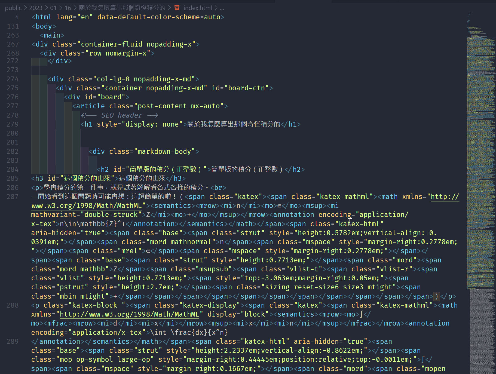
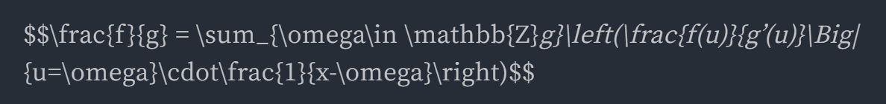
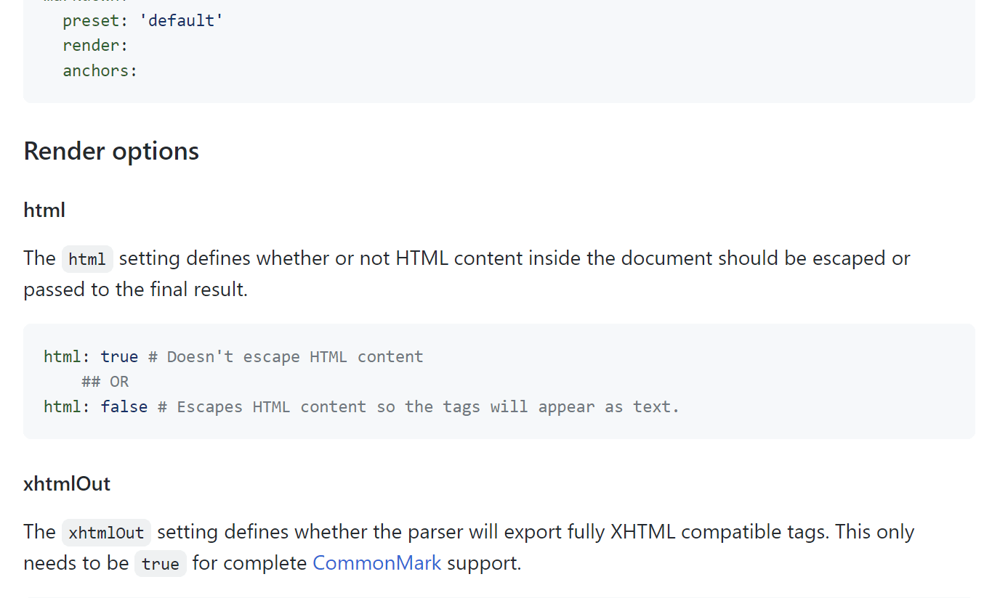
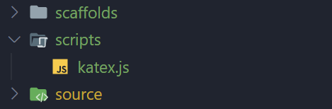
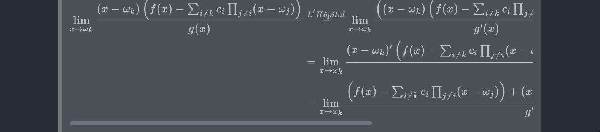
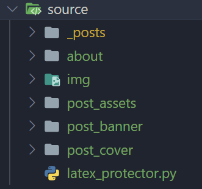

HEXO 輕量級 LaTeX 渲染
Last updated on January 28, 2023
Contents
前言
本文適用於正在使用 @traptitech/markdown-it-katex 套件進行 HEXO 文章中 LaTeX 語法渲染，且與筆者一樣，都有強迫症的人。
正文
不知道你是否曾經為 HEXO 所生成出的厚重檔案所苦？
尤其是當原始 md 檔裡面有許多 LaTeX 語法時，生成出來的東西就會像這樣：

os: 亂糟糟 超級多密密麻麻的東西看了就不舒服qq
就如上圖的情況，原本 15KB 的 md 檔，經過 hexo g 魔法後，整整膨脹了 37.87倍，來到了 568KB。
考量到 Github Pages 只有最多1GB的空間，筆者決定要解決這個亂象。
找資料，卡住
找了許久，最有印象的是這篇教學文章[1]，簡單整理下它的重點：
- 移除
@traptitech/markdown-it-katex - 使用 KaTeX 官網附贈的 Auto-render Extension[2]
- 卡住，遇到問題
為什麼會遇到問題？因為在 md -> html 的過程中，會進行字元跳脫等轉譯動作（筆者對這方面正確用詞不是太熟悉，還請見諒）。
也就是把 & 轉成 &；把 _哈哈_ 轉成 <em>哈哈</em>；諸如此類。
但這就出問題了，因為我們在 md 檔中所寫的 LaTeX 語法，也會有一樣的命運。
首先第一個問題，就是在過程中，會把換行變成 <br>。
如果有一行 LaTeX 語法長這樣：
1 | |
它最後會渲染錯誤，因為轉換過程中會把換行字元 \n 換成 <br>，而這會把 $$ 與接下來的語法分離，Auto-render Extension 自然也無法辨識這是一個由 $$ 作為開頭的LaTeX語法了。
這個問題解決方法還算簡單，只要把所有東西都寫在同一行上就結束，只是略略減少了可讀性。
但問題是出在於第二個問題 很煩。
第二個問題，以筆者的經驗為例。有一個 LaTeX 語法：
1 | |
結果在渲染出來時，它變成了：

仔細即可看出原因：它把原始語法中的 _g}\left(\frac{f(u)}{g'(u)}\Big|_ 的左右兩個 _ 看成 md 語法中的 強調文字 了。
解決方式跟跳脫字元方式一樣：把 每個 _ 前面都多加上 \，變成 _ 的跳脫字元。
而換行 \\ 也有同樣的問題，變成要打 四個 反斜線 \\\\。
但第二個問題的解決方式，顯然嚴重影響了我們在打語法過程中的順暢度，之後如果要修改也相當麻煩，因此必須要找更好的解決方式。
好像可以解決？
但要怎麼不讓我們在 md 檔中寫的 LaTeX 語法與普通的 md 語法做出區別呢？
筆者在埋頭找尋解決方式的過程中，偶然看到了在 hexo-renderer-markdown-it 套件[3]在說明文件上所寫的一段話：

Render options
html
The html setting defines whether or not HTML content inside the document should be escaped or passed to the final result.
這如同一線生機：如果我們把這個 option 打開，並利用 <p>...</p> 把我們在 md 中的 LaTeX 語法包起來，那麼語法就不會受到侵害了。
因此，實作過程如下（包括導入 Auto-render Extension）
實作過程
新增 css 與 Auto-render Extension
- 使用 HEXO注入器[4]，在專案的根目錄（
root/）新增一個名為scripts的資料夾，並在其底下新增名為katex.js的檔案。

- 將以下程式碼貼入：
▶Code1
2
3
4
5
6
7
8
9
10
11
12
13
14
15
16
17
18
19
20
21
22
23
24
25
26
27
28
29hexo.extend.injector.register('head_end', `
<style>
.katex>.katex-html {
white-space: nowrap;
overflow-x: scroll;
overflow-y: hidden;
}
</style>
<link rel="stylesheet" href="https://cdn.jsdelivr.net/npm/katex@0.16.4/dist/katex.min.css" integrity="sha384-vKruj+a13U8yHIkAyGgK1J3ArTLzrFGBbBc0tDp4ad/EyewESeXE/Iv67Aj8gKZ0" crossorigin="anonymous">
<script defer src="https://cdn.jsdelivr.net/npm/katex@0.16.4/dist/katex.min.js" integrity="sha384-PwRUT/YqbnEjkZO0zZxNqcxACrXe+j766U2amXcgMg5457rve2Y7I6ZJSm2A0mS4" crossorigin="anonymous"></script>
<script defer src="https://cdn.jsdelivr.net/npm/katex@0.16.4/dist/contrib/auto-render.min.js" integrity="sha384-+VBxd3r6XgURycqtZ117nYw44OOcIax56Z4dCRWbxyPt0Koah1uHoK0o4+/RRE05" crossorigin="anonymous"></script>
<script>
document.addEventListener("DOMContentLoaded", function() {
renderMathInElement(document.body, {
// customised options
// • auto-render specific keys, e.g.:
delimiters: [
{left: '$$', right: '$$', display: true},
{left: '$', right: '$', display: false},
{left: '\\(', right: '\\)', display: false},
{left: '\\[', right: '\\]', display: true}
],
// • rendering keys, e.g.:
throwOnError : false
});
});
</script>
`, 'default');這個程式碼的意思是：在每一個 page 或是 post 所生成的 html 檔的
<head>...</head>中，加上兩個東西。- 其一，是起始的 css 部分。這是幫超出邊界的數學式加上滾輪視窗。

- 其二，是
Auto-render Extension的程式碼。
- 使用 HEXO注入器[4]，在專案的根目錄（
移除舊套件與設定檔
移除原先使用的
@traptitech/markdown-it-katex套件，並確認有安裝hexo-renderer-markdown-it套件。在
config.yml中刪除@traptitech/markdown-it-katex的設定檔，否則會報錯。
1
2
3markdown:
plugins:
- "@traptitech/markdown-it-katex"讓包在
<p>...</p>中的 latex 語法不要受侵蝕。
在config.yml中新增以下設定檔1
2
3markdown:
render:
html: true新增自動化程式，用
<p>...</p>保護所有.md檔中的 latex 語法。底下程式是早期的版本，更好的程式請見 此文章。
- 在
./source/底下新增名為latex_protector.py的檔案，並將以下程式碼複製貼上：

▶太長了所以先折起來1
2
3
4
5
6
7
8
9
10
11
12
13
14
15
16
17
18
19
20
21
22
23
24
25
26
27
28
29
30
31
32
33
34
35
36
37
38
39
40
41
42
43
44
45
46
47
48
49
50
51
52
53
54
55
56
57
58
59
60
61
62import os
# must ends with '/'
ENTRIES_TO_PROTECT_UNDER_SOURCE_FOLDER = [
'./about/',
'./_posts/'
]
def protect_md_file(file_path):
with open(file_path, 'r', encoding='utf-8') as file:
content: list[str] = file.read().split('\n')
new = []
status = "i"
for (i, line) in enumerate(content):
if status == "i" and line.startswith("$$") and line.endswith("$$") and len(line) > 2:
if not content[i-1].startswith("<p>"):
new.append("<p>")
new.append(line)
if not content[i+1].startswith("</p>"):
new.append("</p>")
elif status == "i" and line.startswith("$$"):
if not content[i-1].startswith("<p>"):
new.append("<p>")
new.append(line)
status = "e"
elif status == "e" and line.endswith("$$"):
new.append(line)
if not content[i+1].startswith("</p>"):
new.append("</p>")
status = 'i'
else:
new.append(line)
with open(file_path, 'w', encoding='utf-8') as file:
file.write('\n'.join(new))
print(f'[Protected] {file_path}')
# root_path ended with '/'
def traverse_folder(root_path):
for filename in os.listdir(root_path):
if filename.endswith('.md'):
protect_md_file(f'{root_path}{filename}')
elif filename.find('.') == -1:
traverse_folder(f'{root_path}{filename}/')
for entry in ENTRIES_TO_PROTECT_UNDER_SOURCE_FOLDER:
traverse_folder(entry)將
ENTRIES_TO_PROTECT_UNDER_SOURCE_FOLDER中新增你想要保護的 資料夾根目錄（與_post同等級的）。筆者在
./source/_posts/與./source/about/底下的 md 檔中都有用到 LaTeX 語法，因此是預設這兩個目錄。執行
latex_protector.py，程式會自行遞迴去找資料夾裡面所有的 md 檔，並回報保護訊息。
- 須知，這個程式碼只會識別將所有以
$$...$$包起來的 LaTeX 區塊，如果 inline LaTeX ($...$) 在渲染上有些問題，請手動幫其加上<p>...</p>。
- 在
使用
hexo clean && hexo g && hexo s進行預覽，沒問題的話即可deploy。- 之後每次 deploy 前都請記得執行
latex_protector.py。
- 之後每次 deploy 前都請記得執行
大功告成！
後記
在經過我們的 調教 修理後，原本15KB的檔案生成後只有 34KB。
相比原來結果，空間節省率高達 94%。
甚至還可以更進一步，在 hexo-neat 的壓縮之下，檔案大小來到了 29KB；空間節省率微增，來到了 94.9%。
如此一來，就可以寫更多的文章了（灑花\^~^/。
p.s. 手一樣好酸owo